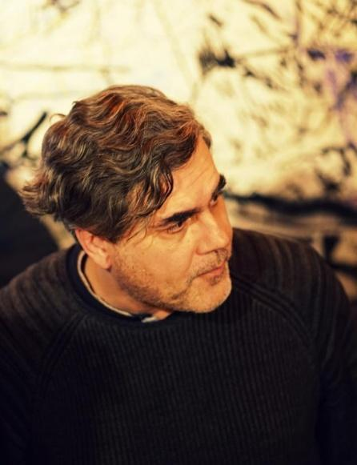
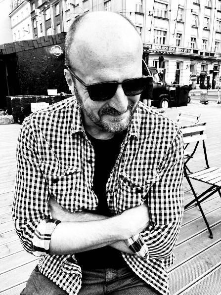
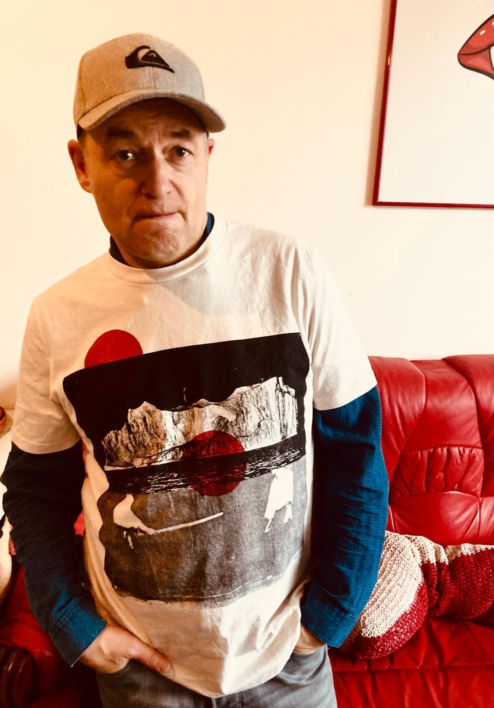
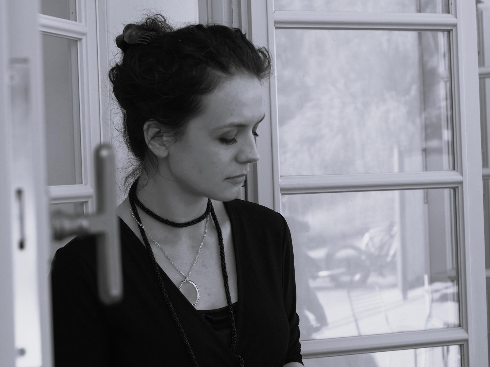
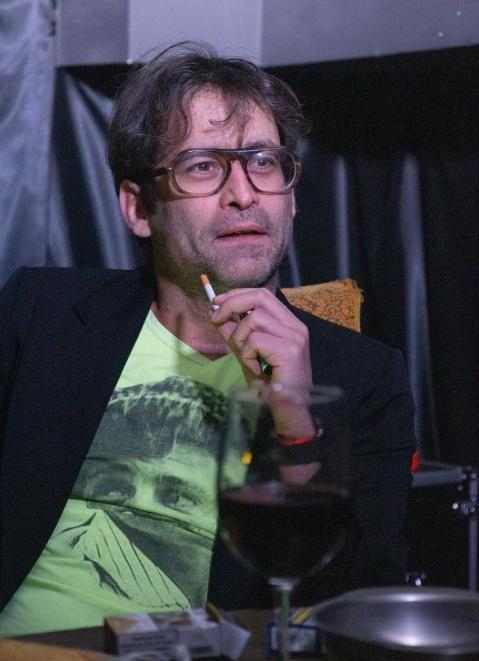
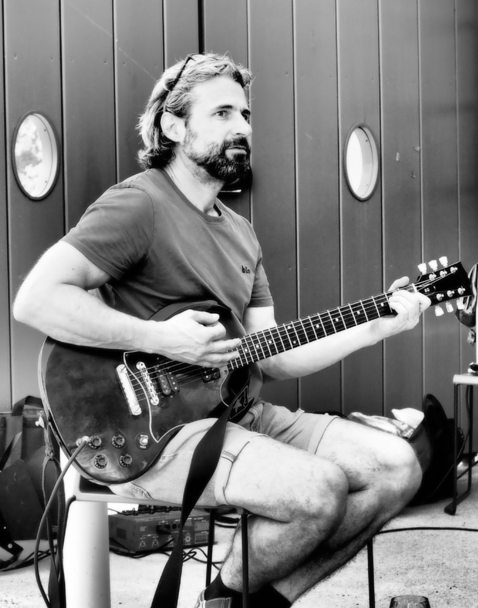
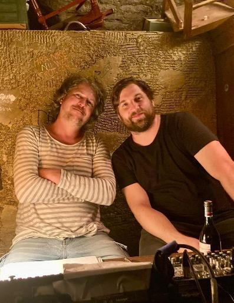
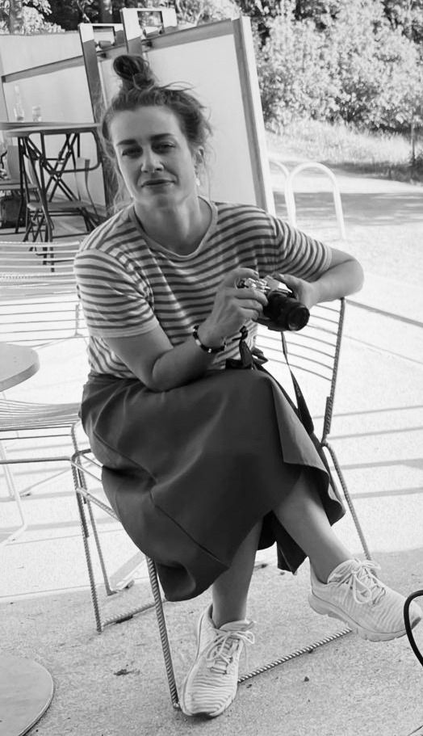

Divadlo expertů na realitu
Temná Muhehe
Imerzivní postdrama z budoucnosti. Kreativec Antony odchází těsně před svým „burnoutem“ z globální komunikační agentury a náhodně narazí na dřívější lásku, jíž říkal Temná Muhehe. Z pozvání na kafe se tak nečekaně stává futuristická romance v éře blížící se nesmrtelnosti lidstva…
Premiéra sezóny
2024/2025
DIVADLO VULKÁN · PRAHASoučasné příběhy. Blízká budoucnost.
Divadlo, které se děje kolem vás.
↘
VULKAAAN / 02 — LIDÉ NA JEVIŠTI
Herci a tvůrci.

DRAMATIK · UMĚLECKÝ ŠÉF
Dan Bek
Autor literárně dramatické tvorby pro Český rozhlas Vltava. Jeho hry zahrnují Temnou Muhehe, Luisa Freund letí do Améru a Syndrom Tako-Tsubo. Spolupracuje také se spolkem SpoluHra.

REŽISÉR
Štěpán Chaloupka
Absolvent režie činoherního divadla na DAMU. Působil jako šéf činohry Divadla F. X. Šaldy v Liberci a umělecký šéf Městského divadla Kladno. Režíroval na řadě pražských i regionálních scén.

HEREC
Pavel Tesař
Vystudoval alternativní a loutkové divadlo na DAMU a spoluzakládal Dejvické divadlo. Od roku 1996 působí v Divadle v Dlouhé. Účinkuje v rozhlase a věnuje se dabingu.

HEREČKA
Karolína Půčková
Vystudovala herectví a moderování na Vyšší odborné škole herecké. Hrála v Komorní činohře a spolupracovala se soubory Tygr v tísni, Divadlo Letí, Depresivní děti touží po penězích i dalšími. Věnuje se také rozhlasovému herectví.

HEREC
Kajetán Písařovic
Působil v Divadle Petra Bezruče, Těšínském divadle, Divadle Komedie, Švandově divadle i dalších souborech. Objevil se ve filmech Jan Hus a Zádušní oběť, věnuje se rozhlasu a moderuje na Českém rozhlasu Vltava.

HUDEBNÍK
Jakub Hájek
Věnuje se autorské hudbě a sound designu pro film, divadlo a multimediální projekty. Spolupracuje na Temné Muhehe, složil hudbu k filmu Smečka a pořadům České televize. Působil v kapelách Atari Terror a Cocotte Minute.

TECHNICKÝ SUPPORT · PRODUKCE
David Schwager
Road manažer a producent, dříve také dramaturg M-klubu Valmez a festivalu Valašský špalíček. Stál u dramaturgie pražských hudebních klubů a je frontmanem skupiny Tichonov.
SVĚTELNÝ DESIGN
Michal Řezáč
Technik, osvětlovač a zvukař. Od roku 2003 spolupracuje s Divadlem Continuo na letních divadelních projektech. Ve Spolku VULKAAAN se podílí na inscenaci Temná Muhehe.
PRODUKČNÍ SPOLKU VULKAAAN
Anna Ciglia
Spoluzakladatelka Divadelního spolku Posun. Podílela se na produkci inscenací Úplné zatmění, Racek nebo Přelet nad kukaččím hnízdem. Má zkušenosti také s filmovou a televizní produkcí.

PRODUKCE SPOLKU VULKAAAN
Petra Švecová
V českém filmu působí v oblasti produkce a organizace natáčení jako produkční, zástupkyně vedoucího produkce i vedoucí natáčení. Mezi vybrané projekty patří Abstinent, Dabing Street, Bába z ledu a Vybíjená.